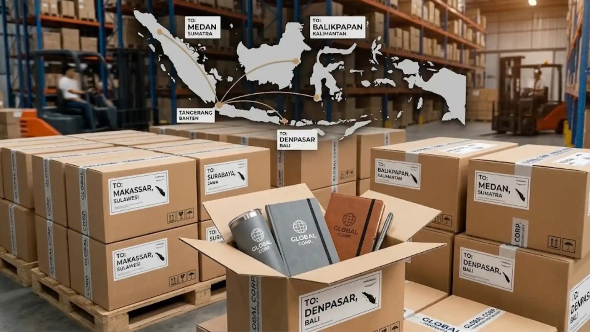

Apakah Merchandise Kantor Logo Dapat Dipesan untuk Wilayah Tangerang dan Banten?
Merchandise kantor logo umumnya dapat dipesan oleh perusahaan yang berlokasi di wilayah Tangerang dan Banten melalui proses konsultasi, produksi custom, dan pengantaran langsung ke lokasi kantor.
Wilayah Tangerang dan Banten merupakan salah satu kawasan dengan aktivitas bisnis yang cukup padat, mulai dari perusahaan skala kecil, menengah, hingga kawasan industri yang memiliki kebutuhan rutin terhadap merchandise korporat, baik untuk kebutuhan internal karyawan maupun untuk relasi bisnis dengan mitra dan klien.
Kedekatan lokasi produksi dengan wilayah ini umumnya memberikan keuntungan berupa waktu pengiriman yang lebih singkat serta kemudahan koordinasi apabila diperlukan pertemuan langsung untuk membahas detail desain merchandise.
Apa Kebutuhan Merchandise yang Umum di Wilayah Tangerang dan Banten?
Kebutuhan merchandise yang umum di wilayah Tangerang dan Banten meliputi merchandise untuk perusahaan manufaktur, kawasan industri, hingga perusahaan jasa dan perkantoran modern di area pengembangan kota baru.
Perusahaan di kawasan industri sering membutuhkan merchandise fungsional seperti alat tulis, tumbler, atau desk set untuk kebutuhan internal karyawan dalam jumlah besar. Sementara itu, perusahaan jasa dan perkantoran di area komersial biasanya lebih membutuhkan merchandise dengan kesan elegan, seperti office desk set atau corporate gift, untuk keperluan relasi bisnis dengan klien maupun mitra kerja.
Apakah Layanan Merchandise Kantor Logo Menjangkau Pengiriman ke Seluruh Indonesia?
Layanan merchandise kantor logo umumnya dapat menjangkau pengiriman ke berbagai wilayah di Indonesia, tidak hanya terbatas pada area Tangerang dan Banten, melalui kerja sama dengan jasa ekspedisi yang melayani pengiriman antar kota maupun antar pulau.
Dengan dukungan sistem logistik yang semakin luas jangkauannya, perusahaan yang berlokasi di luar Tangerang dan Banten tetap dapat memesan merchandise kantor logo secara custom melalui proses konsultasi daring, pengiriman contoh desain digital, hingga pengiriman produk jadi ke alamat tujuan di berbagai kota di Indonesia.
Hal ini memungkinkan perusahaan dari berbagai wilayah tetap dapat memperoleh merchandise dengan kualitas dan proses produksi yang sama seperti perusahaan yang berlokasi lebih dekat dengan tempat produksi.

Bagaimana Proses Konsultasi Desain Dilakukan untuk Pemesanan dari Luar Kota?
Proses konsultasi desain untuk pemesanan dari luar kota umumnya dilakukan secara daring melalui komunikasi jarak jauh, pengiriman file desain digital, dan proses revisi sebelum produksi dimulai.
Perusahaan dari luar wilayah Tangerang dan Banten biasanya dapat menyampaikan kebutuhan merchandise, termasuk logo, warna brand, dan jenis produk yang diinginkan, melalui komunikasi jarak jauh tanpa harus melakukan pertemuan tatap muka. Setelah itu, tim produksi akan membuat rancangan desain digital yang dapat direvisi bersama hingga disetujui, sebelum akhirnya masuk ke tahap produksi massal dan pengiriman ke alamat tujuan.
Apa yang Perlu Diperhatikan Saat Memesan Merchandise Kantor Logo dari Luar Kota?
Hal yang perlu diperhatikan saat memesan merchandise kantor logo dari luar kota antara lain estimasi waktu produksi dan pengiriman, ketepatan data alamat, serta komunikasi yang jelas mengenai detail desain sebelum produksi dimulai.
Karena pengiriman dari luar kota memerlukan waktu tambahan dibandingkan pengambilan langsung, perusahaan sebaiknya merencanakan pemesanan jauh sebelum tanggal kebutuhan, terutama apabila merchandise akan digunakan untuk acara dengan tanggal pasti seperti seminar atau gathering perusahaan.
Ketepatan data alamat pengiriman juga penting untuk menghindari keterlambatan atau kesalahan pengiriman, terutama untuk pemesanan dalam jumlah besar. Selain itu, komunikasi yang jelas mengenai detail desain, warna, dan ukuran logo sejak awal proses konsultasi akan membantu meminimalkan kebutuhan revisi setelah produk memasuki tahap produksi massal.
"Komunikasi yang jelas mengenai detail desain, warna, dan ukuran logo sejak awal proses konsultasi akan membantu meminimalkan kebutuhan revisi setelah produk memasuki tahap produksi massal."
— Indriana Safitri, Penulis Merchandise Kantor
Apakah Perusahaan di Luar Tangerang Bisa Melihat Contoh Produk Sebelum Produksi Massal?
Perusahaan di luar Tangerang umumnya tetap dapat melihat contoh produk melalui foto atau video produk sebelumnya, maupun melalui sampel fisik yang dikirimkan sebelum proses produksi massal dilakukan.
Untuk memastikan hasil akhir sesuai ekspektasi, banyak layanan merchandise kantor logo menawarkan opsi pengiriman sampel atau prototipe kepada perusahaan pemesan sebelum melanjutkan ke tahap produksi dalam jumlah besar. Langkah ini membantu perusahaan dari luar kota memastikan kualitas bahan, hasil cetak logo, dan detail desain sudah sesuai sebelum melakukan konfirmasi pemesanan dalam skala penuh.

Kesimpulan
Layanan merchandise kantor logo custom pada dasarnya dapat menjangkau perusahaan di wilayah Tangerang, Banten, maupun kota lain di seluruh Indonesia melalui proses konsultasi daring, produksi custom, dan pengiriman yang terencana. Dengan memperhatikan estimasi waktu produksi, ketepatan alamat, dan komunikasi desain yang jelas, perusahaan dari berbagai wilayah tetap dapat memperoleh merchandise berkualitas yang sesuai dengan identitas brand mereka.